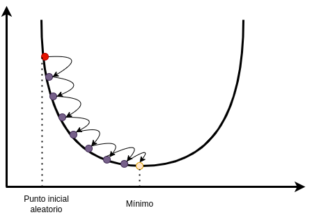
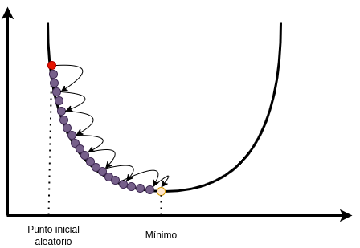
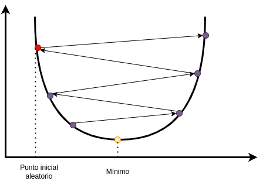
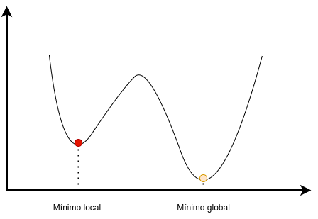

Descenso de Gradiente#
El Descenso de Gradiente Estocástico (SGD) es un algoritmo de optimización utilizado en aprendizaje automático para ajustar los parámetros de un modelo de manera eficiente.
Para entender como funciona, lo primero que debemos hacer es entender como funciona el descenso del gradiente. El Descenso de Gradiente es un algoritmo de optimización utilizado para minimizar la función de pérdida de un modelo. La función de pérdida mide la discrepancia entre las predicciones del modelo y los valores reales del conjunto de datos.
Imagina que estás en lo alto de una gran colina y tu meta es llegar al punto más bajo, que sería como encontrar el lugar ideal en términos de eficiencia o éxito. Puedes pensar en esta colina como la superficie de una función, donde la altura en cada punto refleja el nivel de “pérdida” o “error” en la tarea que estás realizando. En este escenario, tu objetivo es descender por la colina para minimizar esa pérdida y llegar al punto más bajo, que simboliza el mejor rendimiento posible.
{kind=link}
En la práctica, se inicia el proceso con una inicialización aleatoria. Luego, de manera iterativa, se mejora gradualmente ajustando esos parámetros en pequeños pasos. En cada paso, el objetivo es reducir la función de coste, como el Error Cuadrático Medio (MSE), con el fin de llevar al algoritmo hacia la convergencia.
Uno de los parámetros más importantes en el descenso del gradiente es el número de pasos, ya que si introducimos un número de pasos muy elevados, se tendrán que hacer muchas iteraciones.
{kind=link}
Por otro lado, si el número de pasos es muy bajo, pueden ocasionarse situaciones extrañas e incluso realizarse un salto de lado en la curva.
{kind=link}
Otro problema a tener en cuenta es el del mínimo local. Es una situación en la optimización donde un algoritmo puede quedar atrapado en un punto que es un mínimo relativo pero no el mínimo global de una función. En otras palabras, es como estar en la parte más baja de una colina en lugar de estar en la base de la montaña.
Imagina que estás tratando de encontrar la parte más baja de una cadena montañosa en la oscuridad. Puedes terminar en una depresión local (un mínimo local), pensando que has alcanzado el punto más bajo, pero en realidad, hay un valle más profundo (el mínimo global) que no has explorado.
{kind=link}
Este problema puede surgir cuando la función que están tratando de minimizar tiene múltiples puntos bajos, y el algoritmo elige uno cercano en lugar del punto más bajo en general. Es un desafío común en la optimización y puede afectar la eficacia de los algoritmos en la búsqueda de soluciones óptimas.
Descenso de Gradiente Estocástico#
El Descenso de Gradiente Estocástico es una variante del Descenso de Gradiente que utiliza una muestra aleatoria de datos en cada iteración. Esto lo hace particularmente eficiente cuando se trabaja con grandes conjuntos de datos.
En lugar de calcular el gradiente usando todo el conjunto de datos, elegimos una muestra aleatoria en cada iteración. Esto introduce un elemento estocástico y acelera el proceso de aprendizaje.
Posteriormente, ajustamos los parámetros utilizando la muestra seleccionada, de manera similar al Descenso de Gradiente convencional.
Estos pasos se deben repetir a lo largo de varias iteraciones hasta que los parámetros convergen.
En scikit-learn podemos utilizar la clase SGDClassifier. Este clasificador es particularmente útil para problemas de clasificación binaria y multiclase en conjuntos de datos grandes.
Hiperparámetros#
A continuación se muestran algunos de los hiperparámetros que podemos utilizar en el descenso del gradiente estocástico:
| HIPERPARÁMETROS DE UN SGDCLASSIFIER | |||
|---|---|---|---|
| loss | Especifica la función de pérdida a ser optimizada. Puede ser "hinge" para SVM lineal, "log" para regresión logística, "modified_huber" para clasificación binaria, entre otras opciones. | ||
| penalty | Especifica la norma utilizada en la penalización. Puede ser "l2" para la norma L2 (ridge), "l1" para la norma L1 (lasso), o "elasticnet" para una combinación de ambas. | ||
| alpha | Parámetro de regularización que controla la fuerza de la penalización. Valores más altos aumentan la regularización. | learning_rate | Controla la tasa de aprendizaje utilizada en las actualizaciones de peso. | eta0 | Tasa de aprendizaje inicial para la opción "constant". No utilizado para otros esquemas de aprendizaje. | max_iter | Número máximo de iteraciones (pases sobre los datos) durante el entrenamiento. | shuffle | Indica si se deben barajar los datos en cada época. | n_iter_no_change | Número de épocas sin mejora después de las cuales se detendrá el entrenamiento. | random_state | Semilla utilizada para reproducir resultados aleatorios. |
Vamos a ver como afectan algunos de estos parámetros al entrenamiento del modelo.
loss#
El parámetro loss en el SGDClassifier de scikit-learn especifica la función de pérdida que se utilizará durante el entrenamiento para guiar la optimización de los pesos del modelo. La elección de la función de pérdida afecta directamente la naturaleza del aprendizaje del modelo y puede ser crucial para el rendimiento en diferentes tipos de problemas:
hinge: Utilizado comúnmente en SVM lineales para problemas de clasificación binaria y multiclase.
log_loss: Aplicable a problemas de clasificación binaria y multiclase.
modified_huber: Principalmente en problemas de clasificación binaria.
En general, “hinge” y “log_loss” son opciones sólidas para problemas de clasificación, pero puede ser útil experimentar con varias funciones de pérdida para encontrar la más adecuada para tu conjunto de datos específico.
learning_rate#
El parámetro learning_rate en el SGDClassifier de scikit-learn controla la tasa de aprendizaje durante el entrenamiento. La tasa de aprendizaje es un hiperparámetro crucial que afecta la magnitud de los ajustes de los pesos del modelo en cada iteración del Descenso de Gradiente Estocástico (SGD). Aquí hay algunas opciones comunes para el parámetro learning_rate y sus características:
optional: Es una buena elección predeterminada y funciona bien en muchos casos. Puede adaptarse a cambios en la geometría de la función de pérdida durante el entrenamiento.
constant: Útil cuando la geometría de la función de pérdida no cambia significativamente durante el entrenamiento. Puede requerir ajuste manual de la tasa de aprendizaje.
invscaling: Puede ser beneficioso para converger hacia el mínimo de manera más suave a medida que avanza el entrenamiento.
adaptive: Puede ser útil cuando las características tienen escalas diferentes y se desea una adaptación más precisa.
n_iter_no_change#
El parámetro n_iter_no_change en el SGDClassifier de scikit-learn es un hiperparámetro que especifica el número de épocas (iteraciones) durante las cuales se permite que la función de pérdida en el conjunto de validación no mejore antes de detener el entrenamiento.
Un valor bajo de n_iter_no_change puede ser útil para evitar entrenamientos prolongados. Si el rendimiento del modelo en el conjunto de validación no mejora significativamente después de un número limitado de épocas, detener el entrenamiento puede ahorrar tiempo computacional.
En algunos casos, un modelo puede continuar ajustándose demasiado a los datos de entrenamiento y empeorar en datos nuevos (sobreajuste). Limitar el número de épocas sin mejoras puede ayudar a detener el entrenamiento antes de que el modelo se sobreajuste.
n_iter_no_change puede ser crucial para la eficiencia del entrenamiento. En problemas donde el modelo converge rápidamente y no hay ganancias significativas después de cierto punto, detener el entrenamiento puede ser beneficioso.